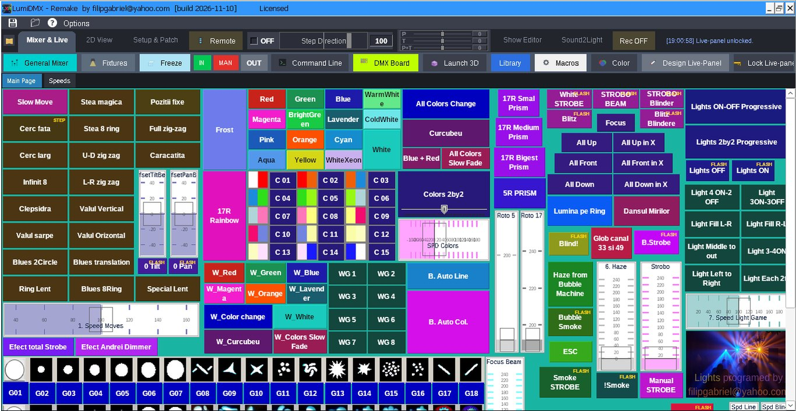
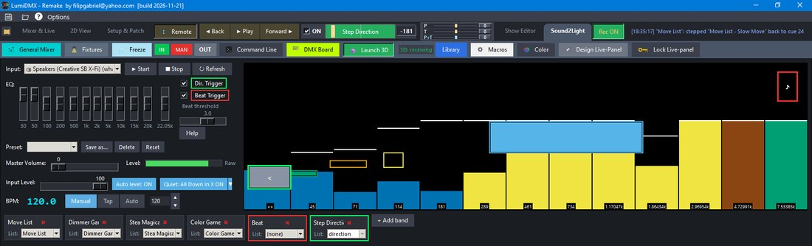
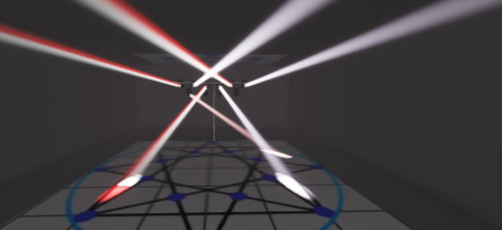
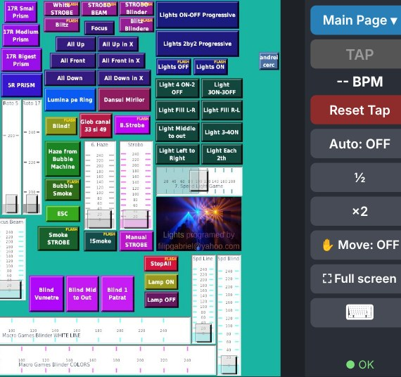
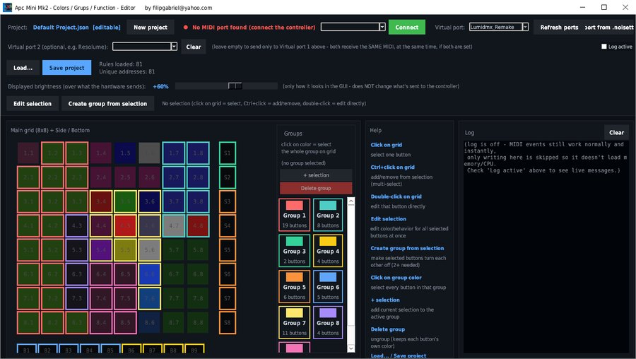
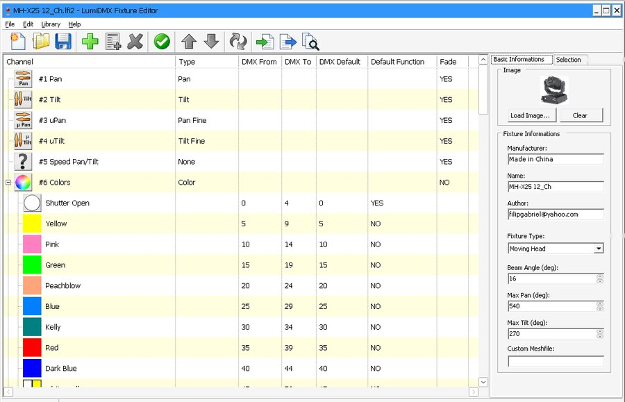

LumiDMX Remake plays your moving heads, beams, washes, LED bars, strobes and smoke machines – by hand, from a controller, from a phone or tablet, or on the beat of the music. It opens LumiDMX X1 projects as they are. LumiDMX Remake comandă moving head-uri, beam-uri, wash-uri, bare LED, stroboscoape și mașini de fum – de mână, de pe controller, de pe telefon sau tabletă, sau pe ritmul muzicii. Deschide proiectele LumiDMX X1 așa cum sunt.
Windows 10 / 11 · version 12.4.2 · activation key neededWindows 10 / 11 · versiunea 12.4.2 · necesită cheie de activare

Everything you need to light a club night, a DJ set or an event – from one window.Tot ce trebuie pentru luminile dintr-un club, un set de DJ sau un eveniment – dintr-o singură fereastră.

The music drives the lights. The program listens to the sound, finds the beat and the BPM, and steps your chases and colour games in time.
Muzica conduce luminile. Programul ascultă sunetul, găsește bătaia și BPM-ul și avansează chase-urile și jocurile de culori în ritm.

See the show before you get to the venue. 3D LumiDmx Remake draws your rig with the light the program sends: beams, colours, gobos and movements, live.
Vezi show-ul înainte să ajungi la locație. 3D LumiDmx Remake desenează instalația ta cu lumina pe care o trimite programul: fascicule, culori, gobo-uri și mișcări, live.

Web Remote puts the Live panel on your phone or tablet over Wi-Fi – no app to install, just the browser.
Web Remote pune panoul Live pe telefon sau tabletă prin Wi-Fi – fără aplicație de instalat, doar browserul.

Play the buttons by hand on an Akai APC mini mk2 with coloured feedback, or on any MIDI controller and keyboard.
Apeși butoanele de mână pe un Akai APC mini mk2, cu leduri colorate, sau pe orice controller MIDI și de la tastatură.

Make or correct a fixture profile in minutes – from the DMX table of the manual, or imported from QLC+, Open Fixture Library and GDTF.
Faci sau corectezi profilul unei fixturi în câteva minute – din tabelul DMX din manual, sau importat din QLC+, Open Fixture Library și GDTF.
Buttons for chases, colours, gobos and moves, sliders, flash buttons.
Butoane pentru chase-uri, culori, gobo-uri și mișcări, slidere, butoane flash.
Waves (sine, square, saw) across your fixtures on any channel – moves, dimmer, colour.
Valuri (sinus, dreptunghi, dinte de fierăstrău) peste aparate, pe orice canal – mișcare, dimmer, culoare.
Effects across LED bars and rows of fixtures.
Efecte pe bare LED și pe rânduri de aparate.
Shows on a timeline with music, played start to end.
Show-uri pe linie de timp, cu muzică, redate de la cap la coadă.
See which fixture is lit and with what colour.
Vezi ce aparat e aprins și cu ce culoare.
Mirrored pan and tilt for pairs of moving heads.
Pan și tilt în oglindă pentru perechi de moving head-uri.
Art-Net nodes, Open DMX (FTDI) and Soundlight USB interfaces.
Noduri Art-Net, interfețe USB Open DMX (FTDI) și Soundlight.
Opens LumiDMX X1 projects with all their buttons and shows.
Deschide proiectele LumiDMX X1 cu toate butoanele și show-urile.
Both look the same and play the same projects. The Player cannot change them – nothing can be broken by mistake.Arată la fel și cântă aceleași proiecte. Player-ul nu le poate modifica – nimic nu se strică din greșeală.
| Full | Player | |
|---|---|---|
| Play projects live, Sound2Light, Web Remote, MIDICântă proiecte live, Sound2Light, Web Remote, MIDI | ✓ yesda | ✓ yesda |
| Add fixtures, design the Live panel, Effect GeneratorAdaugă fixturi, desenează panoul Live, Effect Generator | ✓ yesda | ✗ nonu |
| Fixture Editor and 3D includedFixture Editor și 3D incluse | ✓ yesda | ✗ nonu |
| Opens .x1 projects / saves .xRDeschide proiecte .x1 / salvează .xR | ✓ / ✓ | ✓ / no/ nu |
| Made forPotrivit pentru | building and updating showscine face și întreține show-uri | clubs, DJs, eventscluburi, DJ, evenimente |
Each program is activated for the computer it runs on.Fiecare program se activează pentru calculatorul pe care rulează.
Unzip the archive into a folder and start the .exe. The activation window shows this computer's code.
Dezarhivează arhiva într-un folder și pornește .exe-ul. Fereastra de activare arată codul acestui calculator.
Press Copy and send the code to us on Facebook.
Apasă Copy și trimite-ne codul pe Facebook.
Paste the key you receive and press Activate. From then on the program opens at once.
Lipește cheia primită și apasă Activate. De atunci programul pornește direct.
69 pages with real screenshots: every window, every button, step by step. The same manual is in the program (the ? button).69 de pagini cu capturi reale: fiecare fereastră, fiecare buton, pas cu pas. Același manual e și în program (butonul ?). Manualul e în engleză.
Open the manualDeschide manualulActivation keys, questions and projects – write to us on Facebook.Chei de activare, întrebări și proiecte – scrie-ne pe Facebook.
Facebook · Filip Gabriel